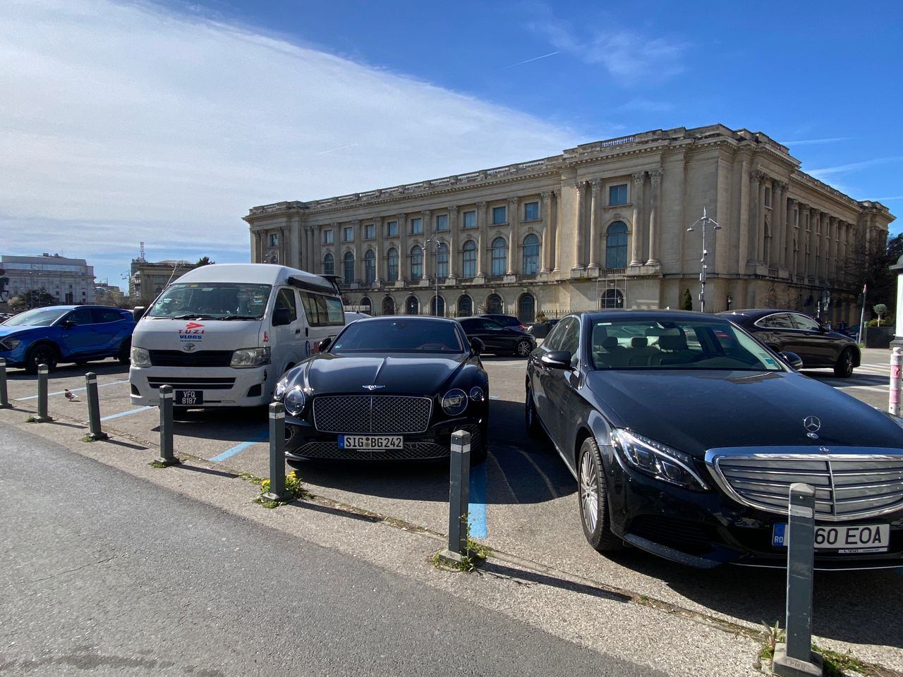

Real Story · 中文
Toyotaki 停在 luxury cars 旁边。
在 Bucharest，我把 Toyotaki 停在 roadside， 旁边刚好都是 luxury cars。 我弟弟看到后提醒我： “Don’t scratch ppl’s car.”
Lol。Toyotaki 一路从 Malaysia 开到 Romania， 现在停在这些豪车旁边，看起来也很有自己的气场。 只是我的确要小心，不可以 scratch 到人家的车。

Park Detail
公园里的 automated flushing toilet，而且免费。
在 Bucharest 的公园里，我看到 automated flushing toilet。 最好的是：免费。
长途 campervan travel 会让人很注意这些细节。 厕所、shower、水、parking、sleeping spot， 这些看起来小小的东西，其实都是每天能不能安心继续走的基础。
Arcul de Triumf
凱旋門，終於走路給走到了。
后来我终于走到了 Bucharest 的 Arcul de Triumf， 也就是布加勒斯特凯旋门。 不是坐车经过而已，是用脚一步一步走到。
长途旅行里，很多地方不是“到了”就算。 有些地方要你走一段路、晒一点太阳、累一点， 才会真正进入记忆。
Overnight
29/3 overnight at MOL Petrol Station in Pitești.
29 March 2024 那晚，我 overnight at MOL Petrol Station in Pitești。 Bucharest 的大建筑、luxury cars、免费厕所、Arcul de Triumf， 最后都回到 road life 最现实的 ending： petrol station overnight。
English Memory Summary
Luxury cars, a free toilet, and a monument reached on foot.
In Bucharest, Tuzi parked Toyotaki beside luxury cars, and her younger brother reminded her not to scratch anyone’s car. During the city walk, she also found a free automated flushing toilet in a park — a small but meaningful detail for campervan life.
She later walked to Arcul de Triumf, Bucharest’s Arch of Triumph. On 29 March 2024, she overnighted at a MOL petrol station in Pitești.
Heart Statement
有些城市记忆，是由豪车、厕所、纪念碑和油站一起组成的。
Bucharest was not one grand scene. It was Toyotaki beside luxury cars, a free toilet in a park, and an arch finally reached by walking.